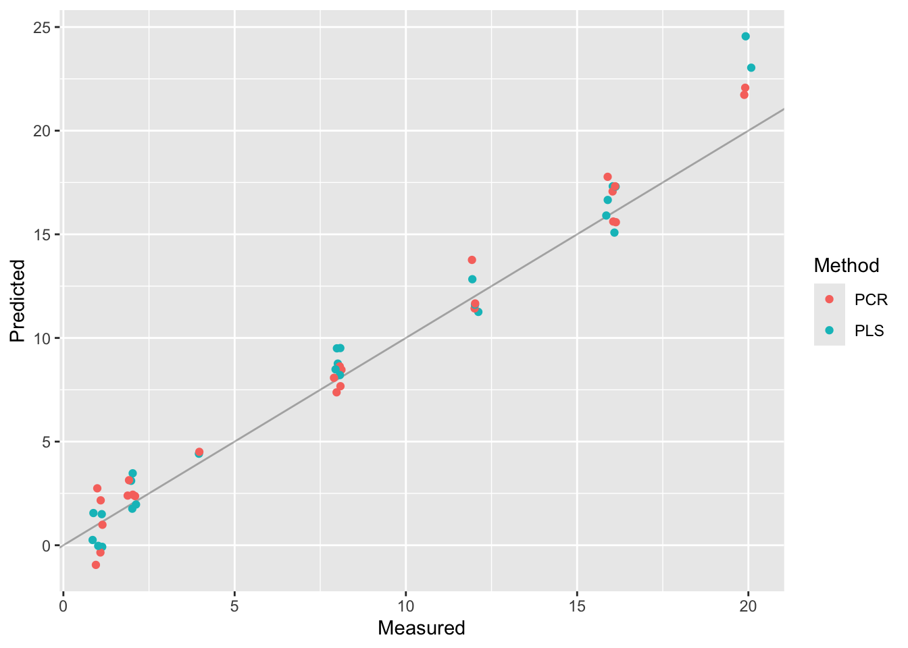

Principal component analysis is often a necessary first step when there are a large number of independent variables that need to be analyze simultaneously. Many devices in a modern lab produce this kind of high-dimensional data: for example, a reading for a single sample obtained via gas chromatography-mass spectrometry (GC-MS) or hyperspectral imagining (HSI) is a vector with 100s of entries, and with the number of samples often running in the 100s as well, we need a technique like PCA to find the needle in the haystack.
In this chapter we consider a number of real-world examples, from the life sciences and beyond, where PCA and dimensionality reduction prove to be essential.
Warning
Given that the examples in this chapter deal with real-world data, which is often large and messy, the R code is at times a bit more complex than in the previous chapter. The underlying principles remain the same, however.
2.1 Adulteration of olive oil
This case study is a simplified version of an analysis done by the group of Prof. Van Haute of the Centre for Food Chemistry and Technology at GUGC to determine the adulteration of extra-virgin olive oil through the use of hyperspectral imaging data. The full analysis can be found in (Malavi et al. 2023). My thanks go to Prof. Van Haute for making the data available and for in-depth discussions regarding the analysis.
2.1.1 Problem statement
Extra-virgin olive oil (EVOO) is a type of oil that is made by cold-pressing the fruit of the olive tree without the use of chemicals or heat. It is considered the highest quality and most flavorful type of olive oil and is widely used in cooking and as a dressing for salads and other dishes. Extra-virgin olive is packed with antioxidants and healthy fats, making it a popular choice among health-conscious consumers. Due to its high quality and health benefits, extra-virgin olive oil is often more expensive than other types of olive oil.
Extra-virgin olive oil is sometimes adulterated, either accidentally, or deliberately, by the addition of other, cheaper vegetable oils. This is misleading to the customer and can pose health risks, for example through the introduction of allergens. As a result, manufacturers and food safety agencies have an interest in determining whether a given EVOO sample has been adulterated, and if so, to what degree.
One way to determine the chemical composition of an oil sample is through hyperspectral imaging (HSI). A hyperspectral imaging system will shine infrared light onto the sample and measure the reflection off the sample at different wavelengths. We will not go into the details of how this signal is acquired, but what is important is that the system outputs for each sample a so-called spectral curve describing the average reflectance at different wavelengths. By inspecting the spectral curve, we can establish whether the sample absorbs light of a specific wavelength, and this can point towards the presence of particular chemical structures that characterize the sample. An example of a spectral curve is shown in figure Figure 2.1.
In our case study we want to determine whether hyperspectral imaging can be used to detect the adulteration of extra-virgin olive oil. More precisely, we have the following research questions:
Can hyperspectral imaging be used to detect whether olive oil has been adulterated with other kinds of oils?
If so, can the amount of adulteration be quantified (e.g. as a percentage)?
To investigate these research questions, Malavi et al. (2023) acquired readings from 13 different kinds of unadulterated EVOO, together with readings from 42 adulterated mixtures. Each adulterated mixture was prepared by taking olive oil and adding one of 6 different vegetable oils at 7 different percentages (ranging from 1% to 20% adulterant). Each sample was prepared and imagined in triplicate, resulting in 183 spectra. Each spectrum is a vector of length 224, describing the reflectance at 224 equally distributed wavelengths from 700 to 1800 nm.
(a)
(b)
Figure 2.1: Hyperspectral imaging system (left) and typical output spectra (right). Figure source: Malavi et al. (2023).
Below, we read in the dataset and we print out the first 6 columns of a random sample of 10 rows (the full dataset is too large to display in its entirety). Note that the dataset has 228 columns: 4 of these are metadata variables described below and the remaining 224 columns describe the spectrum for each sample. The metadata variables are:
Sample ID/Wavelength: The name of the oil or mixture, and the mixture ratio (if applicable)
Sample: A unique integer identifying each sample. Not used in the subsequent analysis.
Classification: Whether the sample is primarily olive oil or not.
% Adulteration: The percentage of food oil added to the mixture. For pure EVOO this is 0, while for pure food oil it is 100%. For the other mixtures, it is one of 1%, 2%, 4%, 8%, 12%, 16%, or 20%.
Code
library(readxl)# Read in the data and add the 'mixture' column described above. oils <-read_excel("./datasets/02-pca/HSI.xlsx")# Names of the spectra.cols <-colnames(oils)spectra <- cols[5:length(cols)]# "Long" form of the dataframe, used for plotting.oils_long <- oils %>%pivot_longer(cols = spectra, names_to ="wavelength", values_to ="intensity") %>%mutate(wavelength =as.numeric(wavelength))oils[sample(1:nrow(oils), 10), 1:6]
As a first step in our analysis, let’s compare the typical spectrum of EVOO with that of the other 6 vegetable oils. We see that overall the spectra are quite similar (they are all oils, after all) but that there are small differences between the different kinds of oil. On the other hand, if we are given a new, unlabeled spectrum, it would be quite difficult to “guess” just by looking what type of oil it is. This is where dimensionality reduction will help us!
Code
# Keep only EVOO and pure vegetable oil, and compute mean reflectivity across # the 3 replicatessummarized_oils_long <- oils_long %>%filter(`% Adulteration`==0|`% Adulteration`==100) %>%mutate(type =if_else(Classification =="Olive", "EVOO", `Sample ID/Wavelength`)) %>%group_by(type, wavelength) %>%summarise(mean_intensity =mean(intensity))ggplot( summarized_oils_long,aes(x = wavelength, y = mean_intensity, color = type)) +geom_line() +labs(x ="Wavelength (nm)", y ="Mean reflectance", color ="Type of oil")
Typical spectra of EVOO and different types of vegetable oils. Note the similarity with figure Figure 2.1 (b).
2.1.3 Computing the principal components
We are now in a position to compute the principal components, and to figure out what they tell us about olive and other oils. Two issues to keep in mind:
Our dataset contains both metadata and spectral data: we want to make sure to compute the principal components only for the columns containing spectral data!
For spectral data, we definitely do not scale the different variables!
Percentage of variance explained by the first 10 principal components. The first two principal components explain 94% of the variance in the data.
The loadings for the first two principal components tell us something about what the spectra look like overall, and what variations between the individual spectra look like. This is of course an extremely coarse perspective, given that we only consider two principal components.
Code
loadings <-as.data.frame(pca_oils$rotation)loadings$wavelength <-as.numeric(rownames(loadings))rownames(loadings) <-1:nrow(loadings)loadings %>%select(wavelength, PC1, PC2) %>%pivot_longer(cols =c(PC1, PC2)) %>%ggplot() +geom_line(aes(x = wavelength, y = value, color = name), linewidth =1.0) +labs(x ="Wavelength", y ="", color ="Component")
Loadings for the first two principal components.
We started this section with the observation that there are minute differences between the spectra of different oils, but we admitted that it would be quite difficult to tell two spectra apart just by eye. We are now in a position where we can solve this issue: by considering only the first few principal components we get a reduced number of variables that (hopefully) can be used to tell the spectra apart.
Below we have a scatterplot of the first two principal components. The EVOO samples are round dots, and the adulterated oils are triangles colored by the percentage of adulteration. The EVOO samples are clearly distinct from the adulterated oils (they are separated by the second principal component). This answers our first research question with a “yes”: we can clearly tell pure and adulterated oils apart.
Figure 2.2: Principal component plot for the EVOO and adulterated oil samples. Pure vegetable oil samples are not shown.
2.1.4 Predicting the percentage of adulteration
Now that we are able to tell EVOO and adulterated samples apart, it is time to consider our second research question: given an adulterated oil sample, can we predict the percentage of vegetable oil that was added? Looking at Figure 2.2, it looks like we’ll need more than two principal components: we see no clear pattern in the percentage adulteration that we or a linear model could exploit.
Before building our model, we need to do some data preparation. We select from our dataset only those rows that contain adulterated oils, and we split the resulting dataset into a training dataset (containing 80% of the data) and a test dataset (containing the remaining 20%). The idea is that we set apart the test dataset and build our model using only the training dataset. The test dataset is used to evaluate how well the model performs on data that it has never seen before. Using the full dataset to build the model and evaluate it would result in an overly optimistic estimate of the predictive capabilities of our model.
Code
# for the adulterated oils, predict the percentage of adulterationadulterated <- oils %>%filter(`% Adulteration`>0, `% Adulteration`<=20) %>%select(-`Sample ID/Wavelength`,-Sample,-Classification)# Set aside some test datatrain_no <-round(0.8*nrow(adulterated))train_idxs <-sample(1:nrow(adulterated), train_no)adulterated_train <- adulterated[train_idxs, ]adulterated_test <- adulterated[-train_idxs, ]message("Number of rows in the training dataset: ", nrow(adulterated_train))
Number of rows in the training dataset: 101
Code
message("Number of rows in the test dataset: ", nrow(adulterated_test))
Number of rows in the test dataset: 25
We could build a linear model with more than two components by hand, just like we did for the bodyfat dataset in the previous chapter. However, it is easier to let R do the work for us, and we will use the the pls package for this. This package has a number of advantages: you can use the same formula syntax that you know from the lm command, and the package comes with a number of different regression models. Here we build a principal component regression model and a partial least squares regression model.
library(pls)# Principal component regressionpcr_model <-pcr(`% Adulteration`~ ., data = adulterated_train, scale =FALSE, validation ="CV", ncomp =10)# Partial least squares regressionpls_model <-plsr(`% Adulteration`~ ., data = adulterated_train, scale =FALSE, validation ="CV", ncomp =10)
The argument validation = "CV" will cause the model to select by itself the appropriate number of components to use, up to a maximum of 10 components (this is controlled by the ncomp = 10 argument). To do this it will use the so-called cross-validation (CV) strategy: it will repeatedly split the data into a training and a validation set (not to be confused with the training and test set that we created ourselves above) and use the performance on the validation set to select the appropriate number of components.
Now that we have two models, we can ask them to make predictions on the held-out test data, and we can compare the predictions made between both models. In the prediction plot below we see in general good agreement between the actual percentage of adulteration (on the \(x\)-axis) and the predicted percentage (on the \(y\)-axis). Both models perform comparably well, at least as far as can be judged from the plot.
# Plot both results togetherdf <-data.frame(measured = adulterated_test$`% Adulteration`,PLS =unlist(as.list(pls_pred)),PCR =unlist(as.list(pcr_pred))) %>%pivot_longer(cols =c("PLS", "PCR"))jitter_x <-position_jitter(w =0.15, h =0)ggplot(df) +geom_abline(alpha =0.3) +geom_point(aes(x = measured, y = value, color = name),alpha =1.0, position = jitter_x) +labs(color ="Method", x ="Measured", y ="Predicted")

2.1.5 A cautionary note
In our model building procedure we have glossed over a few critical steps that may cause doubt on the validity of the model or the conclusions that we can draw from our analysis.
Chiefly among these is the splitting into training and test data. We did that correctly to train our model, but everything that came before it (including the exploratory data analysis) used the entire data set. To build a model that is not overly optimistic, you should set aside some data to serve as test data at the beginning of your analysis, and then use only the training data to determine the appropriate number principal components, to classify oils into adulterated and pure, and so on. Your model should never “see” the test data, until the very end.
We have trained and evaluated our model only on adulterated oils. In reality, however, we will present the model with unknown oil samples, which may or may not be adulterated, and the performance on such samples is an open question. A better model could be built by including EVOO samples in our dataset, or by first classifying oils into adulterated/pure. Each approach comes with a number of complications that would lead us too far.
Our model willfully ignores a number of important variables in the dataset. For example, we don’t take into account the kind of vegetable oil that was used to adulterate a sample. By distinguishing the type of adulterant, we could presumably build a better model, but this too would make the analysis significantly more complex.
A more complete model that addresses all of these concerns (and more) can be found in (Malavi et al. 2023).
2.2 Eigenfaces
Our last example is not life sciences based, but serves as an illustration to show that PCA is a powerful technique in data analysis, which can be used to reduce the number of degrees of freedom in a large dataset.
We use the Olivetti dataset of human faces, which contains 400 frontal photographs of human faces. Each face is a grayscale image of 64 by 64 pixels, where the intensity of each pixel is a value between 0 (completely black) to 255 (completely white). Each image can be represented as a \(64 \times 64\) matrix, but it will be more convenient to take the columns of this matrix and lay them out one after the other to obtain a vector with \(64 \times 64 = 4096\) entries, as in Figure 2.3.
Figure 2.3: An image that is \(N\) pixels high and \(M\) pixels wide can be viewed as a matrix with \(N\) rows and \(M\) columns, or as a vector with \(N \times M\) elements. Here, \(N\) and \(M\) are both equal to 3.
First, we load the dataset. Note that the dataset comes as a data matrix with 4096 rows and 400 columns.
library(loon.data)data(faces)dim(faces)
[1] 4096 400
Each column in the data matrix represents a face, laid out as a column vector with 4096 as in Figure 2.3. We can assemble these vectors back into images and visualize them. This requires some R commands that we haven’t covered; you don’t have to understand what this code does.
Code
show_image <-function(imgdata, title =NULL) { m <-matrix(imgdata, nrow =64, ncol =64, byrow = F) m <-t(apply(m, 2, rev))image(m, axes =FALSE, col=grey(seq(0,1,length=256)),main = title)}par(mfrow=c(2, 4), mar=c(1, 1, 1, 1))for (i in1:8) {show_image(faces[,10*i], paste0("Face #", 10*i))}
Figure 2.4: Six faces from the Olivetti dataset.
Doing a principal component analysis is a simple matter of running prcomp. Despite the size of the dataset, this component should not take more than a second to run.
pc_olivetti <-prcomp(faces)
Note that there are 400 principal components in this dataset. We can visualize their relative importance via a scree plot, which we limit to the first 50 components for clarity, since the remaining 350 components contribute almost no variance. This indicates that we can probably discard most of the principal components without losing much of the expressivity of our dataset. We will see further down that this is indeed the case!
Code
gg_screeplot(pc_olivetti, n =50)
One of the advantages of the faces dataset is that the loadings vectors can be represented graphically, and that we can reason about them. Figure 2.5 shows the first 8 loadings vectors, represented as images. How should we interpret these images? Each loadings vector represents a particular pattern in the dataset of all faces: the first loadings vector, for example, captures the overall structure of a human face, while the second represents the illumination from right to left. Probably there were some photos in the dataset that were illuminated from the left or the right. Loadings vector three does the same for the top-down illumination, and loadings vectors four through eight capture particular patterns involving the eyes or the eyebrows. By selectively “mixing” all 400 loadings vectors, we can recreate any face in the dataset.
Code
normalize <-function(x) {# ensure that PC components are between 0 and 255,# for visualization255* (x -min(x)) / (max(x) -min(x))}par(mfrow=c(2, 4), mar=c(1, 1, 1, 1))for (i in1:8) {show_image(normalize(pc_olivetti$x[,i]), paste0("PC ", i))}
Figure 2.5: The first 8 loadings vectors of the Olivetti dataset represent particularly expressive patterns in the dataset.
To finish, let’s also investigate how well PCA performs as a data reduction method. By retaining only a limited number of principal components, we can build “compressed” versions of the images that contain less information but are comparable to the eye. Figure 2.6 shows two original faces from the dataset (left), together with compressed versions involving the first 10, 40, and 80 most significant principal components. The version that uses only 10 components is quite generic and it is difficult even to distinguish the male and female face. The version with 80 components, on the other hand, is very close to the original.
Figure 2.6: Original images (left), and 3 PCA-reduced images with increasing numbers of principal components.
It is worth realizing the amount of data compression realized by using PCA. The original images had 4096 degrees of freedom, whereas the rightmost versions in Figure 2.6 are described by the coefficients of 80 loadings vectors, more than a 50-fold reduction in degrees of freedom! Clearly there are some visual artifacts that appear in the compressed versions, but the faces are clearly distinguishable, and it seems very reasonable at this point that a machine learning algorithm (for example, to classify the faces, or to do segmentation) could take these compressed images as input and still perform well.
Malavi, Derick, Amin Nikkhah, Katleen Raes, and Sam Van Haute. 2023. “Hyperspectral Imaging and Chemometrics for Authentication of Extra Virgin Olive Oil: A Comparative Approach with FTIR, UV-VIS, Raman, and GC-MS.”Foods 12 (3): 429. https://doi.org/10.3390/foods12030429.